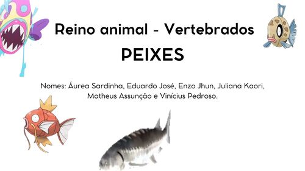
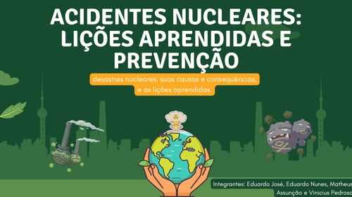

Primeiro ano 1º
No primero ano do ensino médio, fiz:
Segundo ano 2º
No segundo ano do ensino médio, fiz:
Terceiro ano 3º
No meu terceiro e último ano do ensino médio, pensando em Ciências da Natureza, tive muitas aulas e fiz muitos trabalhos legais. Como:

Esta apresentação sobre o reino animal, focado nos peixes vertebrados.

Esta apresentação é sobre acidentes nucleares, onde destacamos 3 principais acidentes. Falamos sobre suas causas, consequencias e formas de prevenção.